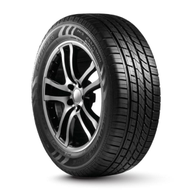

Neumáticos para autos
Alternativas para traslados urbanos y viajes por ruta. La elección depende de la medida indicada por el fabricante, el tipo de conducción y las condiciones habituales del camino.
Al consultar: compartí la medida, marca, modelo y año del auto para encontrar opciones compatibles.